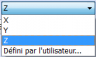
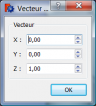

|
| Emplacement du menu |
|---|
| Pièce → Révolution |
| Ateliers |
| Atelier Pièce, Complet |
| Raccourci par défaut |
| Aucun |
| Voir aussi |
| Extrusion |
Description
- Si votre version de FreeCAD a une case à cocher pour Solide dans le dialogue de Revolutrion, vous pouvez faire des Solides à partir de filaires fermés et d'Arêtes.(Voir Notes pour les exceptions):
Crée une Révolution de l'objet sélectionné autour d'un axe donné. La forme résultante sera un solide fermé, ou une face ouverte, selon que la forme de départ, est une face, ou un contour ouvert.
Utilisation
Après avoir sélectionné une esquisse, choisissez l'axe de Révolution, et, l'angle à donner à la révolution.
Les types de formes suivantes sont autorisées, et, conduisent à des formes de production répertoriés :
| Input shape | Output shape |
|---|---|
| Vertex | Edge |
| Edge | Face |
| Wire | Shell |
| Face | Solid |
| Shell | Compound solid (Compsolid) |
Les solides, ou les compositions avec des solides, ne sont pas autorisés comme formes d'entrée. Les compositions normales, ne sont actuellement pas autorisées.
Les versions futures vérifieront les formes réelles, et les type d'objets composés.
Options
Vue combinée → Tâche
Révolution
- TÂCHES Angle : L'argument Angle, spécifie jusqu'à quel point l'objet doit être transformé. (Défaut, 360°).
- TÂCHES X : Distance de déplacement dans la direction X, de l'axe de rotation, par rapport à l'origine du système de coordonnées. ( Défaut, 0,00).
- TÂCHES Y : Distance de déplacement dans la direction Y, de l'axe de rotation, par rapport à l'origine du système de coordonnées. ( Défaut, 0,00).
- TÂCHES Z : Distance de déplacement dans la direction Z, de l'axe de rotation, par rapport à l'origine du système de coordonnées. ( Défaut, 0,00).
- TÂCHES Axe : Direction de révolution à donner à la forme, X, Y ou Z . (Défaut, Z).
Si vous sélectionnez un axe défini par l'utilisateur, Une boîte de dialogue s'affiche , les coordonnées définissent la direction de l'axe tournant, en ce qui concerne le système de coordonnées : si la coordonnée Z est 0, et, les coordonnées Y, et, X sont non nulles, alors, l'axe se trouve sur le Plan X-Y.
Son angle est tel, que la tangente est le quotient de la donnée Coordonnée X et Y.
- TÂCHES Select line in 3D view : (à documenter)
Formes
- Liste des formes susceptibles d’être modifiées.
Vue combinée → Propriétés Données
Base
- DONNÉESAngle : Angle de rotation à donner à la forme, de -360,00° à 360,00°. (Défaut, 360,00°). ( TÂCHES Angle )
- DONNÉESAxis : [0,00 0,00 1,00] . Axe sur lequel la révolution va s'effectuer. ( TÂCHES Axe ).
- DONNÉES X : Valeur à donner dans la direction X . (Défaut, 0,00).
- DONNÉES Y : Valeur à donner dans la direction Y . (Défaut, 0,00).
- DONNÉES Z : Valeur à donner dans la direction Z . (Défaut, 1,00).
- DONNÉESBase : [0,00 0,00 0,00] Récapitulatif des coordonnées de déplacement, où l'axe de Révolution va s'effectuer, à partir des coordonnée 0,00 0,00 0,00.
- DONNÉES X : Déplacement de l'axe de rotation de la forme dans la direction X, ( TÂCHES X ) (Défaut, 0,00).
- DONNÉES Y : Déplacement de l'axe de rotation de la forme dans la direction Y, ( TÂCHES Y ) (Défaut, 0,00).
- DONNÉES Z : Déplacement de l'axe de rotation de la forme dans la direction Z, ( TÂCHES Z ) (Défaut, 0,00).
- DONNÉESLabel : Label donné à la forme, modifiable à volonté.
- DONNÉESPlacement : [(0,00 0,00 1,00);0,00;(0,00 0,00 0,00)], donne l'ensemble des données Angle, Axis, et, Position ci dessous.
Si vous sélectionnez, le titre Placement , un bouton avec trois petits points s'affiche, en cliquant sur ce bouton ... , vous avez accès à la fenêtre d'options Tâche Placement.
, un bouton avec trois petits points s'affiche, en cliquant sur ce bouton ... , vous avez accès à la fenêtre d'options Tâche Placement. - DONNÉESAngle : Angle de rotation par rapport aux coordonnées X, Y, Z. (Défaut, 0,00°).
- DONNÉESAxis : [0,00 0,00 1,00] Récapitulatif des axes. Cette option spécifie l'axe des axes autour desquels la pièce de révolution créée doit être pivotée PAS RÉVOLUTIONNÉE (la valeur exacte du pivotement est défini par l'option Angle ci-dessus).
Cette option demande trois arguments, qui sont passés sous forme de nombres dans les cases de la boîte à outils, définissants les coordonnées x, y ou z, .
La modification d'une valeur de plus d'un axes provoque la rotation avec l'angle de chaque axe.
Par exemple : nous déterminons un angle de 15°, nous spécifions une valeur de 1,0 pour x et 2,0 pour y, cette configuration, aura pour effet, une rotation finale de la pièce qui sera de, " 15° dans l'axe x " et " 30° dans l'axe y ".
- DONNÉES X : Valeur à donner dans la direction X . (Défaut, 0,00).
- DONNÉES Y : Valeur à donner dans la direction Y . (Défaut, 0,00).
- DONNÉES Z : Valeur à donner dans la direction Z . (Défaut, 1,00).
- DONNÉESPosition : [0,00 0,00 0,00] récapitulation des coordonnées de position. Déplacement des coordonnées X, Y, Z, par rapport aux points d'origine 0, 0, 0.
- DONNÉES X : Distance à donner à la direction X .(Défaut, 0,00).
- DONNÉES Y : Distance à donner à la direction Y .(Défaut, 0,00).
- DONNÉES Z : Distance à donner à la direction Z .(Défaut, 0,00).
Exemple
cliquez sur le bouton Révolution pour voir s'affficher une nouvelle fenêtre, et, sélectionnez votre esquisse dans la fenêtre Formes.
Sélectionnez l'axe sur lequel se fera la révolution (dans notre exemple, l'axe Y), validons avec OK ,
et, voici notre soucoupe.
La forme finie.
Allons dans "Propriétés → Données", et, donnons un angle d'ouverture de 180°, pour voir que la forme nouvellement révolutionnée, est une forme vide.
une fois sélectionnée, une nouvelle barre d'outils s'affiche.
et, sélectionnons l'outil de conversion
 Converti un Draft en Sketch,
Converti un Draft en Sketch,
Reprenons maintenant notre boîte à outil Part
 , et sélectionnons l'outil Révolution.
, et sélectionnons l'outil Révolution.

La fenêtre d'options s'affiche, et choisissons l'axe pour la Révolution,
pour notre exemple, prenons l'axe Y,

{kind=link}
{kind=link}
{kind=link}
{kind=link}
{kind=link}
{kind=link}
{kind=link}
{kind=link}
{kind=link}
{kind=link}
{kind=link}
{kind=link}
{kind=link}
{kind=link}
{kind=link}
{kind=link}
{kind=link}
{kind=link}
{kind=link}
{kind=link}
{kind=link}
inscrivons un angle de, 300°, et, validons avec OK .
Maintenant, nous avons notre forme pleine.
{kind=link}
{kind=link}
Une nouvelle icône s'affiche dans la Vue combinée, renseignant l'opération.
Si vous cliquez sur la flèche, vous pouvez voir les formes d'origine, qui ont servi dans l'opération de Révolution.
Les formes originales peuvent être effacées, pour ne conserver que le produit final.
{kind=link}
Les outils de modifications


Notes
- If your version of FreeCAD has a check box for Solid in the Revolve dialog, you can make Solids from closed Wires and Edges.
- If Revolve is performed using an axis that intersects the face to rotate, and you want to create a solid, the result might be invalid. This can happen for various reasons, self-intersection, direction, etc.